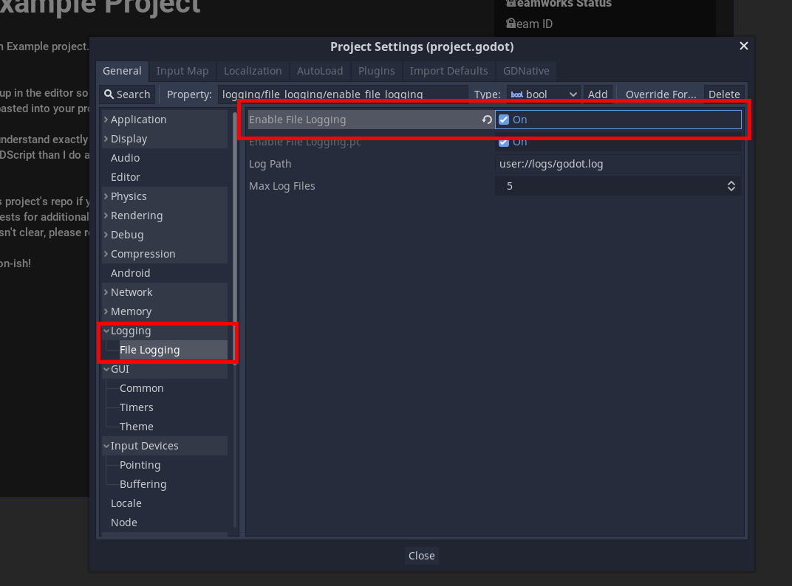
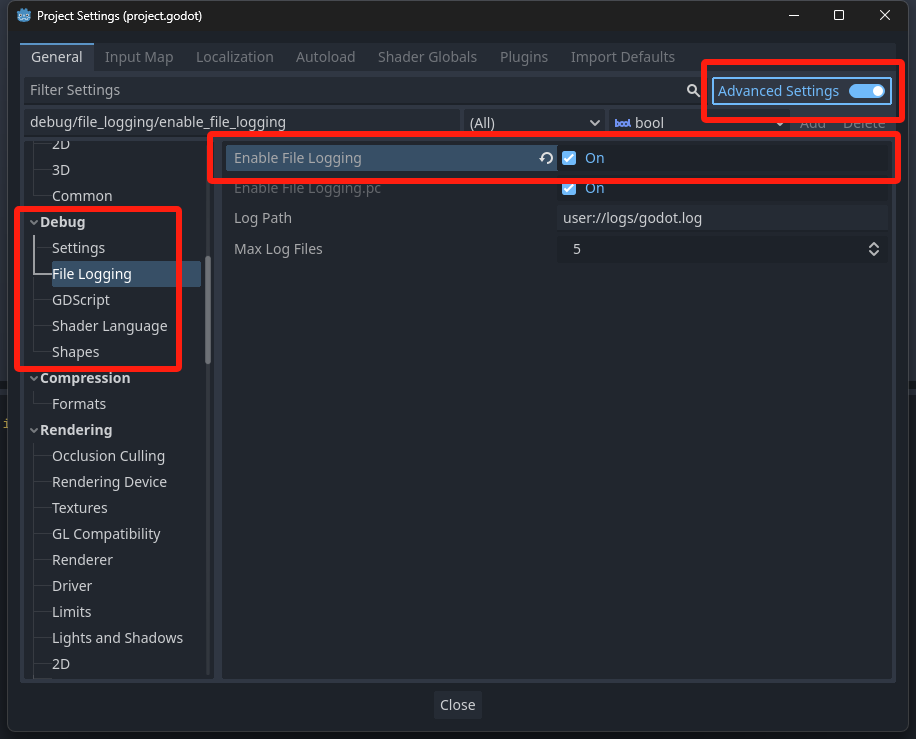

Tutorials - Initializing Steam
In this tutorial, we will cover the basic initialization of Steamworks in your game; as well as getting callbacks globally. Check out the common issues tutorial if you have issues getting things to work too.
Please note, this tutorial is only valid for the module and GDExtension versions of GodotSteam; the GDNative version will already have these functions present in the steam.gd autoload script.
Relevant GodotSteam classes and functions
Preparation
Before we go any further, it is recommended that you enable logging in your project if you have not done so. This will help both you, and us, debug any issues you might run into down the road.
Of course, if you have a custom logging system, don't worry about this.
To enable logging in the Godot editor, go to: Projects > Project Settings > Logging > File Logging and check Enable File Logging. This will start placing logs in your project's user data folder. Where are these, you might ask? Check out the official Godot Engine documentation to find the locations.

To enable logging in the Godot editor, go to: Projects > Project Settings > Debug > File Logging and check Enable File Logging. This will start placing logs in your project's user data folder. Where are these, you might ask? Check out the official Godot Engine documentation to find the locations.

Steam App ID
When the game is run through the Steam client, it already knows which game you are playing. However, during development and testing, you must supply a valid app ID somehow. Typically, if you do not already have an app ID, you can use app ID 480 which is Valve's SpaceWar example game.
You can set the app ID in one of three ways, depending on what is easiest for you:
Method 1: steam_appid.txt
Create a steam_appid.txt file and with only the app ID as the text. This file must be where ever your regular Godot or GodotSteam-enabled editor is located. Though, in the case of plug-ins, sometimes it must be in the root of your project to work correctly.
Also, when shipping your game to Steam, do not include this file as it is not needed. Granted it won't hurt anything if you do.
Method 2: Pass It To Initialization
You can pass the app ID to either steamInit or steamInitEx to set it during initialization. This will be the second argument passed; the first being whether you want the local user's statistics and achievements to be pulled during the initialization. For example:
var initialize_response: Dictionary = steamInitEx( true, 480 )
print("Did Steam initialize?: %s " % initialize_response)
If you use this method, you must pass a true or false as for the first argument.
Notes
This functionality does not exist in GDNative. It only exists in GodotSteam 3.22 and up for Godot 3.x and GodotSteam 4.5 and up for Godot 4.x and GDExtension.
Method 3: Set Environment Variables
You can set two environment variables in an autoload GDscript or the first GDscript to run; preferably the script where you run the Steam initialization function and preferably in the _init() function. For example:
func _init() -> void:
# Set your game's Steam app ID here
OS.set_environment("SteamAppId", str(480))
OS.set_environment("SteamGameId", str(480))
Thanks to user B0TLANNER for providing this method.
Initialize Steam
In my personal projects, I usually create an auto-load GDscript called global.gd which is added as a singleton.
I then create a function called initialize_steam() and add the code below. This is then called from the _ready() function in my global.gd:
func _ready() -> void:
initialize_steam()
func initialize_steam() -> void:
var initialize_response: Dictionary = Steam.steamInitEx()
print("Did Steam initialize?: %s " % initialize_response)
By default, steamInitEx() will query Steamworks for the local user's current statistics and send this data back as a callback (signal). You can pass a boolean (false) to the function to prevent this behavior: steamInitEx(false).
steamInitEx() will always send back a dictionary with two keys / values:
- verbal - The verbose, text version of status
- status
- 0 - Successfully initialized
- 1 - Some other failure
- 2 - We cannot connect to Steam, steam probably isn't running
- 3 - Steam client appears to be out of date
Checking For Errors
The returned dictionary from steamInitEx() can be printed and ignored. However, there are certain conditions where you might not know why the game crashed at boot or does something unexpected; especially in development. For these cases we will check if Steamworks was actually initialized and to stop the game if anything is amiss, we do this:
func initialize_steam() -> void:
var initialize_response: Dictionary = Steam.steamInitEx()
print("Did Steam initialize?: %s" % initialize_response)
if initialize_response['status'] > 0:
print("Failed to initialize Steam, shutting down: %s" % initialize_response)
get_tree().quit()
This code will obviously shut down the game if Steam does not initialize and returns a status of anything except 0. You may just want to capture the failure data and continue on, though the Steamworks functionality won't quite work.
Most times, in development, getting a failure will probably be caused by a missing API file (steam_api.dll, libsteam_api.so, libsteam_api.dylib) or not setting the game's app ID by one of the methods mentioned earlier.
In any case, the intialization functions should give you a pretty good idea of why it failed. If you still cannot figure it out, please contact us for assistance!
Getting More Data
There are a ton of functions you can call just after initialization to gather more data about your user; everything from location, to language used, to avatars, etc. We will just cover some basic things that are commonly used:
var is_on_steam_deck: bool = Steam.isSteamRunningOnSteamDeck()
var is_online: bool = Steam.loggedOn()
var is_owned: bool = Steam.isSubscribed()
var steam_id: int = Steam.getSteamID()
var steam_username: String = Steam.getPersonaName()
This will check if Steam is online, if the app is running on the Steam Deck, get the current user's Steam ID64, and check if the current user owns the game. You can also have the game turn itself off if the current user does not own the game by simply doing this:
if is_owned == false:
print("User does not own this game")
get_tree().quit()
Notes
Shutting the game down with this is_owned behavior might cause problems from people using Family Share, Free Weekends, or other methods of trying the game out. There are other functions to check for those conditions which you might want to consider.
There are other things you may want to do during a boot-up process after Steamworks is initialized, like getting current achievements or statistics, but we'll cover that in another tutorial.
Callbacks
A very important piece of Steamworks is getting callbacks from Steam itself in response to different function. To receive callbacks you will need to have the run_callbacks() function running somewhere; preferably every frame or so. There are two methods available:
Method 1: Add It To _process()
The standard method has been adding the Steam.run_callbacks() function to the _process() function like so:
func _process(_delta: float) -> void:
Steam.run_callbacks()
I highly suggest, much like the initialization process, you put this _process() function with the Steam.run_callbacks() in a global (singleton) script so it is always checking for callbacks. Though, if you want, you can put it in any _process() function in any given script that might be using callback information.
Method 2: Pass It To Initialization
You can pass true as the third argument to either initialization function and have GodotSteam check for callbacks internally. Like so:
var initialize_response: Dictionary = steamInitEx(false, 480, true)
print("Did Steam initialize?: %s " % initialize_response)
Notes
The argument does not exist in the GDExtension version currently. This only works in GodotSteam 3.22 or newer for Godot 3.x and in GodotSteam 4.5 or newer for Godot 4.x.
Some users have noticed that if their run_callbacks sits in a script or node that can be paused, said callbacks will fail to trigger. Make sure this function resides in a script or node that is always processing!
Altogether Now
Putting it together should give us something like this:
extends Node
# Steam variables
var is_on_steam_deck: bool = false
var is_online: bool = false
var is_owned: bool = false
var steam_app_id: int = 480
var steam_id: int = 0
var steam_username: String = ""
func _init() -> void:
# Set your game's Steam app ID here
OS.set_environment("SteamAppId", str(steam_app_id))
OS.set_environment("SteamGameId", str(steam_app_id))
func _ready() -> void:
initialize_steam()
func _process(_delta: float) -> void:
Steam.run_callbacks()
func initialize_steam() -> void:
var initialize_response: Dictionary = Steam.steamInitEx()
print("Did Steam initialize?: %s" % initialize_response)
if initialize_response['status'] > 0:
print("Failed to initialize Steam. Shutting down. %s" % initialize_response)
get_tree().quit()
# Gather additional data
is_on_steam_deck = Steam.isSteamRunningOnSteamDeck()
is_online = Steam.loggedOn()
is_owned = Steam.isSubscribed()
steam_id = Steam.getSteamID()
steam_username = Steam.getPersonaName()
# Check if account owns the game
if is_owned == false:
print("User does not own this game")
get_tree().quit()
extends Node
# Steam variables
var is_on_steam_deck: bool = false
var is_online: bool = false
var is_owned: bool = false
var steam_app_id: int = 480
var steam_id: int = 0
var steam_username: String = ""
func _ready() -> void:
initialize_steam()
func initialize_steam() -> void:
var initialize_response: Dictionary = Steam.steamInitEx(false, steam_app_id, true)
print("Did Steam initialize?: %s" % initialize_response)
if initialize_response['status'] > 0:
print("Failed to initialize Steam. Shutting down. %s" % initialize_response)
get_tree().quit()
# Gather additional data
is_on_steam_deck = Steam.isSteamRunningOnSteamDeck()
is_online = Steam.loggedOn()
is_owned = Steam.isSubscribed()
steam_id = Steam.getSteamID()
steam_username = Steam.getPersonaName()
# Check if account owns the game
if is_owned == false:
print("User does not own this game")
get_tree().quit()
This covers the initialization and basic set-up.
Additional Resources
Video Tutorials
Prefer video tutorials? Feast your eyes and ears!
'Godot + Steam tutorial' by BluePhoenixGames
'Integrating Steamworks' by FinePointCGI
'Godot 4 Steam Integration' by Gwizz
Example Project
To see this tutorial in action, check out our GodotSteam Example Project on GitHub. There you can get a full view of the code used which can serve as a starting point for you to branch out from.